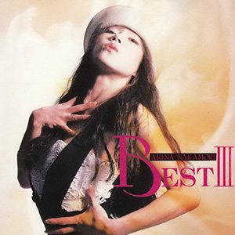

最佳专辑：第5张
发行年份：1992年
发行日期：11月10日
| 歌名 | 作词 | 作曲 | 编曲 |
|---|---|---|---|
| 二人静 -「天河伝説殺人事件」より | 松本隆 | 関口誠人 | 井上鑑 |
| Dear Friend | 伊東真由美 | 和泉一弥 | 和泉一弥 / 若草恵 (弦乐编曲) |
| LA BOHÈME | 湯川れい子 | 都志見隆 | 椎名和夫 |
| 駅 | 竹内まりや | 竹内まりや | 椎名和夫 |
| Blue On Pink | 三浦徳子 | 国安わたる | 若草恵 |
| 水に挿した花 | 只野菜摘 | 広谷順子 | 西平彰 |
| LIAR (单曲版) | 白峰美津子 | 和泉一弥 | 西平彰 |
| CARIBBEAN | 大西美帆 | 和泉一弥 | 和泉一弥 |
| 赤い鳥逃げた | 康珍化 | 松岡直也 | 松岡直也 |
| Angel Eyes | 松井五郎 | 上田知華 | 武部聡志 / 中村哲 (合唱编曲) |
| 忘れて… | 中森明菜 | 羽佐間健二 | 小野沢篤 |
| OH NO, OH YES! | 竹内まりや | 竹内まりや | 椎名和夫 |
首发规格：CD: WPCL-711，CT: WPTL-711
唱片公司：Reprise Records，Warner Music Japan
排行榜：Oricon公信榜专辑榜第6位
再发行：
2006年9月6日 - CD: WPCL-10343
2012年8月22日 - SACD/CD: WPCL-11151
2018年7月4日 - LP: WPJL-10100
2018年7月25日 - CD: WPCL-12906